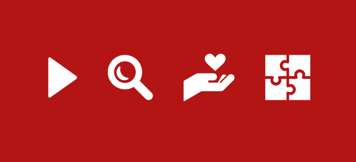
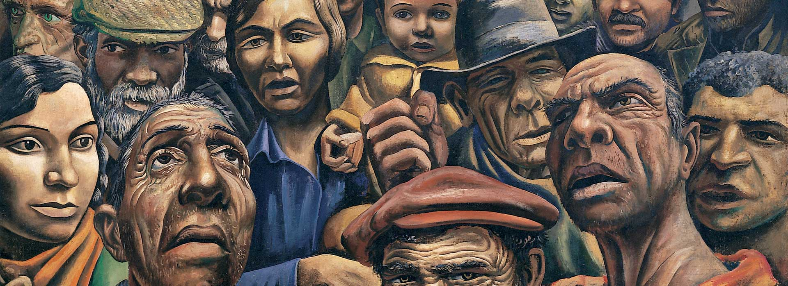
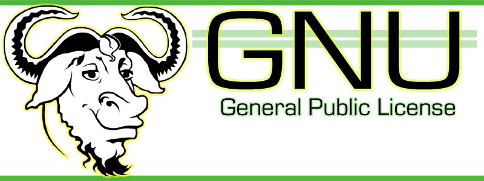

Software Libre para el desarrollo comunitario
30 de Septiembre 2019

parte 0
¿Por qué hablar de esto?
- Las máquinas están en todos lados
- Soberanía Tecnológica
parte 1
Conceptos
¿Qué es el softwate?
- Breve historia
- IBM imagina un negocio mundial de unas pocas computadoras al año
- Personal computer (PC) –> Microsoft
- Smart-Phones
- Software como Servicio
Software Privativo
Software que no respeta la libertad (en algún aspecto)
Software Libre

¿Qué es el
Software Libre?
El Software Libre es aquel que respeta la libertad de las usuarias para:
Libertades

Respeta cuatro libertades esenciales
Estudiar

Copiar

Modificar


No es una distinción técnica sino ética, social y política, por lo tanto, más importante que cualquier distinción técnica
¿Qué es el movimiento del software libre?
Promueve que las usuarias de computadoras obtengan la libertad que otorga el software libre. El software libre permite que las usuarias ejerzan el control de sus propias tareas de computación
Dependencia vs desarrollo
Usar un programa privativo es dependencia
Usar un programa libre es desarrollo
Free Software Software Libre (Libre ≠ gratis)
El software libre es una cuestión de libertad, no de precio.
Debe pensarse en «libre» como en «libertad de expresión»,
no como en «cerveza gratis»
Parte 2
Derechos reservados
¿izquierda o derecha?

Copyleft
prohibido girar a la derecha

Método general para liberar un programa u otro tipo de trabajo, que requiere que todas las versiones modificadas y extendidas también sean libres ¿Qué es el copyleft?
Parte 3
¿Qué hace Libre al Software Libre?
Licencia GPL

La licencia más ampliamente usada en el mundo del software libre La 1ra diseñada específicamente para impedir la apropiación privada del software
Carácter hereditario

Todo lo que se cree a partir de un programa liberado con GPL tendrá que tener a su vez GPL. Garantiza las 4 libertades
Parte 4

Programas
¿Qué es Linux?

GNU/Linux


GNU es un sistema operativo de Software Libre,
es decir, respeta la libertad de las usuarias

Richard Stallman
Contrato social de Debian
“Contrato social” con la comunidad de software libre
- Debian permanecerá 100% libre
- Contribuiremos a la comunidad de software libre
- No ocultaremos los problemas
- Nuestra prioridad son nuestros usuarios y el software libre
- Trabajos que no siguen nuestros estándares de software libre
¿Qué podemos hacer con Software Libre?

Chasqui
Chasqui es una herramienta multiplataforma de licencia libre que está especialmente diseñada para promover y gestionar la comercialización electrónica de productos de la Economía Social y Solidaria
http://proyectochasqui.org/
Estándares
Consensuados, Libres y Abiertos vs de facto
Crear un ambiente favorable para que el Software Libre pueda prosperar
OpenDocument

Formato de Documento Abierto p/ Aplicaciones de Oficina (ODF)
Std OASIS - Open Document Format for Office Applications -
Conocimiento
- Bien Común
- Colectivo
- Democratización del conocimiento
El tipo de software que usamos importa
¿Qué acceso a la información y al conocimiento y la cultura construimos hoy para las generaciones futuras?
¿Cómo podemos asegurar sus derechos en el marco de un desarrollo humano y productivo que considere estos derechos como una de sus dimensiones?
El software que usamos como posicionamiento político
Desnaturalización de lo dado como irreversible
- Saber que podemos elegir el software que usamos
- reflexionar críticamente sobre la forma productiva en la que nos organizamos
- trabajar en favor de una transformación hacia un mejor mundo futuro
¿de quién es el conocimiento?

El Software Libre se convirtió en una forma de producción y distribución del conocimiento completamente diferente a la que genera la industria capitalista, proponiendo la libertad en el uso y apropiación del conocimiento
Valores y principios
Valores y principios compartidos entre la Economía Social y la producción de Software Libre
Acceso
El acceso al conocimiento y la tecnología favorece círculos virtuosos de transformación social
Ética
“El Software Libre no es un asunto técnico, es un asunto ético del uso de las tecnologías, porque el Software Libre respeta la libertad de las usuarias y la solidaridad social de su comunidad” RMS
referencias
videos, entrevistas, libros, notas